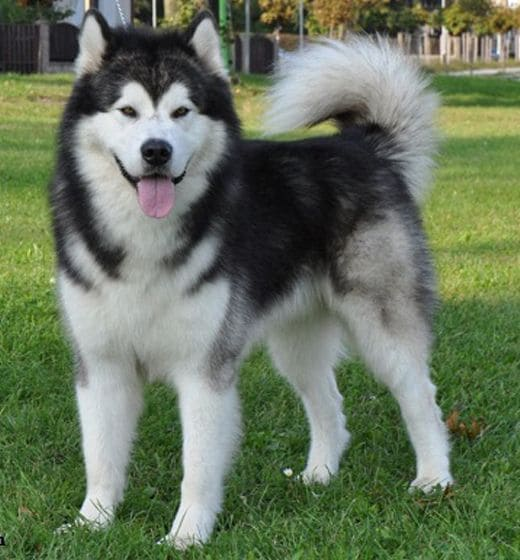
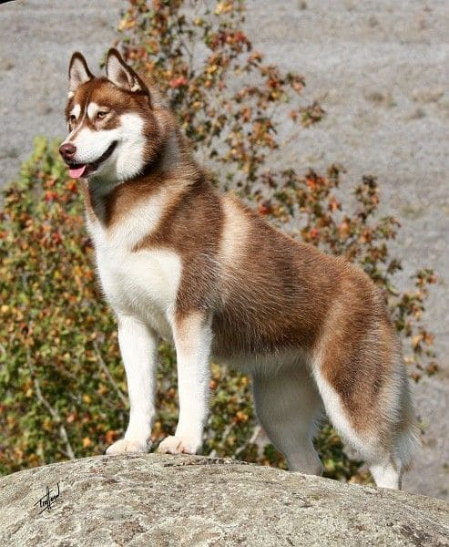

Tipos de Huskies

Husky Siberiano
El Husky Siberiano es una raza fuerte y enérgica, conocida por su pelaje denso y sus ojos azules o heterocromía. Son perros de trabajo y compañía.

Husky Alaskano
El Husky Alaskano es similar al Siberiano pero suele ser más grande y musculoso. Fueron criados para tirar de cargas pesadas en Alaska.

Husky Rojo
Los Huskies Rojos son conocidos por su hermoso pelaje rojo y su naturaleza amigable. Son una variante de color del Husky Siberiano.